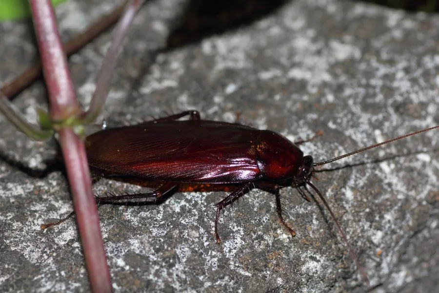

昆虫 · 动物界
黑胸大蠊 Periplaneta fuliginosa

体型较大的室内蟑螂，前胸背板深黑褐色、几乎无斑纹，善爬行也会短距离飞行，常在厨房和下水道附近活动。
- 分类
- 门节肢动物门纲昆虫纲目蜚蠊目科蜚蠊科属大蠊属
- 栖息环境
- 厨房、仓库、下水道、垃圾堆和室外阴沟等温暖潮湿处
- 地理分布
- 中国南方及东南亚，部分温带地区室内也有记录
- 保护级别
- IUCN 暂无评估；中国未列入国家重点保护名录
物种志
黑胸大蠊成虫体长 2–3 cm，体色红褐至黑褐色，前胸背板颜色深，几乎看不到明显的浅色斑纹，这是它与美洲大蠊、德国小蠊区分的重要特征；触角细长，足上多刺，雄虫翅较长，可作短距离飞行，雌虫翅稍短。
它原产亚洲，广泛分布于中国南方及东南亚，喜欢温暖潮湿的环境，常见于厨房、仓库、下水道、垃圾堆和室外阴沟，夜间出来取食残渣、淀粉和腐殖质。黑胸大蠊繁殖快，雌虫产下卵鞘，每个卵鞘含数十枚卵，若虫经多次蜕皮成熟。它可能携带病菌、污染食物，是城市卫生害虫；遇到惊扰时，它会迅速钻进缝隙，并留下气味标记。防治以清理孳生地、封堵缝隙和投放胶饵为主，目前尚无保护评估。
形态与习性
- 食性杂食，取食食物残渣、淀粉和腐殖质
- 体长2–3 cm
- 识别前胸背板深黑褐色，几乎无浅色斑纹
- 繁殖卵生，每个卵鞘含数十枚卵
- 习性夜行性，善爬行，雄虫可短距离飞行
- 危害可能携带病菌、污染食物，属卫生害虫
趣味知识
- 黑胸大蠊的前胸背板几乎是纯黑褐色，没有美洲大蠊那样的浅色斑纹。
- 它喜欢温暖潮湿的下水道和厨房，夜间才出来寻找食物。
- 雌虫把卵产在硬质的卵鞘里，每个卵鞘能装数十枚卵。